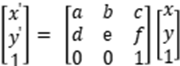
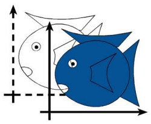
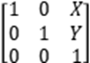
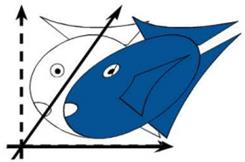
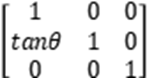

|
类型 |
几何变换 | ||||||||||||
|
描述 |
对图像进行仿射变换，图像齐次坐标环变换公式：  l 平移变换：下图是一个平移示意图。   l 剪切变换：下面是一个沿着x轴剪切示意图。  沿x轴剪切：
沿y轴剪切：  别名：ZV_Affine | ||||||||||||
|
语法 |
ZV_ImpAffine(src,mat,dst[,dw=0,dh=0,interp=1,border="0"])
参数： src：ZVOBJECT类型，源图像为单通道或三通道图像 mat：ZVOBJECT类型，仿射变换矩阵，2行3列或3行3列 dst：ZVOBJECT类型，变换后图像 dw：dst图像的宽度，默认取0则等于src，范围[0,32766]，变换效果由仿射变换矩阵确定，变换后图像裁剪零点到宽高范围内的区域，宽高的改变只影响右下角的裁剪。 dh：dst图像的高度，默认取0则等于src，范围[0,32766] interp：插值算法，默认双线性插值，参考旋转 border：字符串类型，边界处理方式，默认值"0"，超出图像部分补0填充，常用取值如下
| ||||||||||||
|
适用控制器 |
支持ZV功能或者5系列以上的控制器 | ||||||||||||
|
例子 |
ZVOBJECT src,mat,dst ZV_ImgRead(src,"0.bmp",0) '以原图像格式读取图片 ZV_ImgInfo(src,0) ZV_TkGetSimilarityParam(mat,TABLE(0)/2,TABLE(1)/2,30,0.8) '图像mat绕中心旋转30°并缩小0.8，图像大小不变，周围填充0 ZV_ImpAffine(src,mat,dst,0,0,1,"0") '仿射变换 |